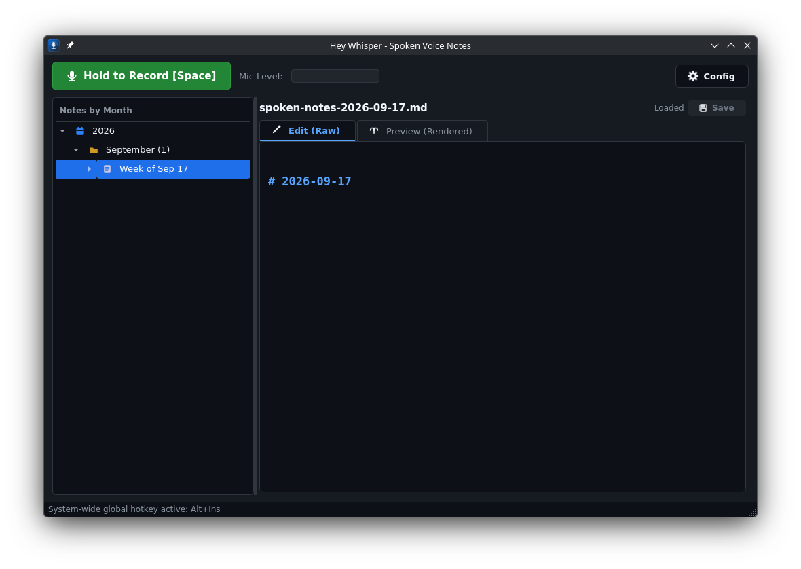
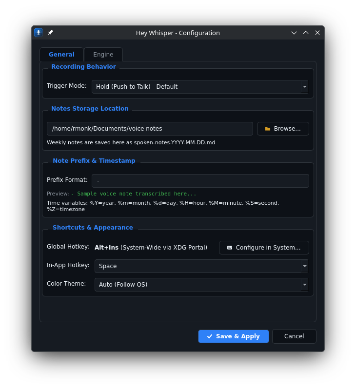
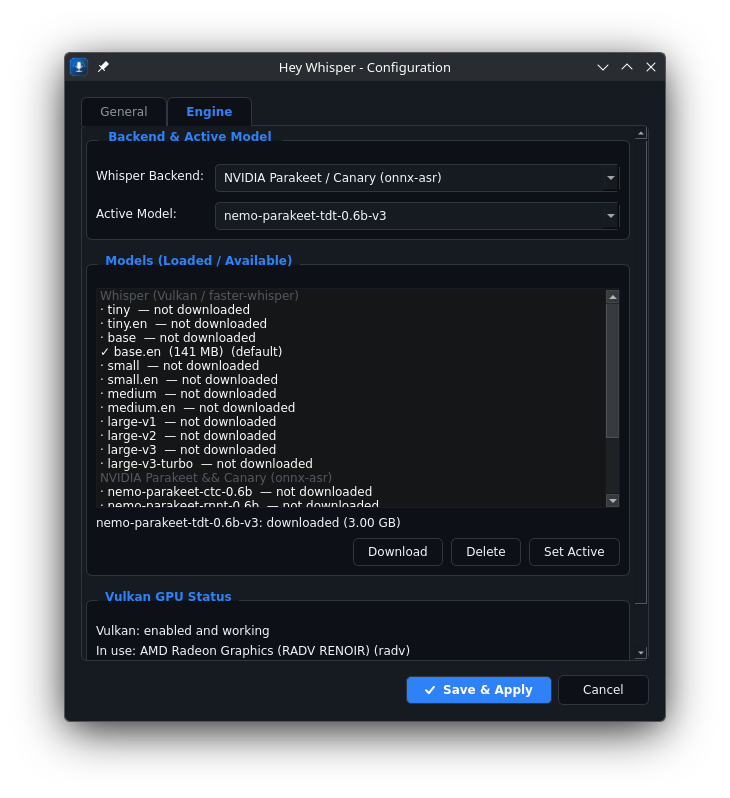

Talk instead of type
Hey Whisper sits quietly in the background. Press and hold a hotkey, say what's on your mind, and let go — your words land in a day-by-day markdown file a second later, no browser tab or account required.

What it does
Everything runs locally. Pick the transcription backend that fits your hardware, the trigger mode that fits how you work, and let it write your notes for you.
GPU-accelerated transcription
Full Vulkan acceleration via whisper.cpp works across NVIDIA, AMD, and Intel GPUs, with automatic fallback to CPU-optimized faster-whisper.
NVIDIA Parakeet & Canary
Optionally run NVIDIA's Parakeet or Canary models via the lightweight onnx-asr package — no PyTorch or full NeMo toolkit needed.
Three trigger modes
Push-to-talk (hold), click-to-toggle, or hands-free voice-activity detection (silence) that starts and stops automatically.
Weekly markdown logs
Notes are grouped into one file per calendar week, with each day under its own heading and a timestamp on every entry.
Desktop GUI & CLI
A full Qt6 interface with a live VU meter and auto-save, or run headless with hey-whisper --cli for quick terminal note-taking.
Nothing leaves your machine
No accounts, no network calls for transcription. Your voice and your notes stay on disk, in plain markdown you can read and edit with anything.
Configured your way
Everything is adjustable from a Settings dialog — no config file editing required, though one's there too if you prefer it.


Install
Hey Whisper ships as a Flatpak with Vulkan and PipeWire built in. The self-hosted repo below is GPG-signed and keeps itself up to date.
flatpak remote-add --user --if-not-exists --from hey-whisper https://rmonk.github.io/hey-whisper/hey-whisper.flatpakrepo
flatpak install --user hey-whisper org.heywhisper.HeyWhisper
flatpak update will then pick up every new release automatically — no
manual re-downloading. Prefer a one-off install instead? Grab the standalone
hey-whisper.flatpak bundle from the
latest release.
Full details, the config file format, and build-from-source instructions are in the
README.